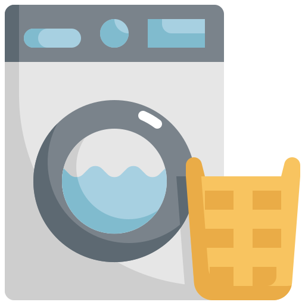

Why wash with us?

At the Orange Town Wash we are committed to providing all your laundry needs. To make sure that you have a convenient and comfortable laundry experience. We may not be a big commercial laundromat but we offer a warm, peaceful and inviting environment.
Your satisfaction is a priority for us. We have an helpful attendant always there to answer any questions or assist in all your laundry needs. If you have any inconvenience our attendant will see that the issue is resolved as soon as possible. Don't hesistate to ask for help. We provide coffee for you as you sit and wait for your laundry. A TV is also available for you to relax and watch while you wait for your laundry to be done.
At the Orange Town Wash we have a variety of washers and dyers of different sizes available. To accomodate the various laundry load sizes so that your laundry are done efficiently and in good time.
- •Wash and Dry
- •Delivery
- •Folding services